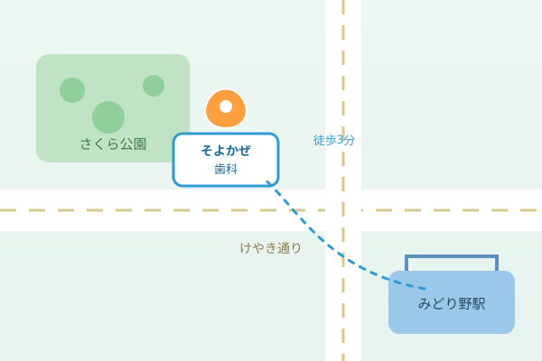

一般歯科
むし歯・歯周病の治療から、詰め物・かぶせ物まで。できるだけ削らず、ご自身の歯を残す治療を基本にしています。
みどり野駅 北口 徒歩3分 ／ 土曜も診療
「痛そう」「怖い」をなくしたくて、そよかぜ歯科は生まれました。表面麻酔から始めるていねいな治療、なんでも相談できる説明、土曜診療とキッズスペース。お子さまからご年配の方まで、ご家族みんなで通える歯医者さんです。
WHY SOYOKAZE
通いやすさも、安心も、ぜんぶ大切に。はじめての方にも、長く付き合う方にも選ばれてきた、6つの理由。
表面麻酔のあと、細い針でゆっくり注入。電動麻酔器で圧を一定に保つから、チクッとしにくい。「痛いのが苦手」という声にこそ、まっすぐ向き合います。
キッズスペースとベビーカーごと入れる診療室、おむつ替えスペースも。お子さまの診療中はスタッフが見守り、保護者の方の治療もできます。バリアフリー設計です。
口腔内カメラとレントゲンの画像をモニターでお見せしながら、今の状態と治療の選択肢をご説明。費用と回数も先にお伝えし、ご納得のうえで進めます。
器具は患者さんごとに交換・滅菌。ヨーロッパ基準（クラスB）の滅菌器と、使い捨てできるものは使い捨てで。目に見えない清潔さにこだわっています。
平日は夜18時まで、土曜も17時まで診療。お仕事や学校帰りにも通いやすい時間帯です。24時間のWeb予約で、思い立ったときにご予約いただけます。
削って詰めるより、虫歯にしないこと。担当の歯科衛生士が定期的なクリーニングとセルフケアの相談で、あなたの歯を一本でも多く残すお手伝いをします。
OUR SERVICES
むし歯の治療から、お子さまの定期検診、白い歯や歯ならびのご相談まで。一つの医院で、お口のことをまるごとお任せいただけます。
むし歯・歯周病の治療から、詰め物・かぶせ物まで。できるだけ削らず、ご自身の歯を残す治療を基本にしています。
「歯医者さん＝楽しい」から。お子さまのペースに合わせ、慣れる練習から無理なく。フッ素塗布やシーラントで虫歯を予防します。
担当衛生士による定期検診とPMTC。歯石やバイオフィルムを除去し、再発しにくいお口へ。3〜4ヶ月ごとの通院がおすすめです。
コーヒーや加齢で気になる歯の色を、薬剤でやさしく白く。ご自宅で続けるホームホワイトニングもご用意。自然な白さを目指します。
目立ちにくいマウスピース矯正から、お子さまの成長を活かした床矯正まで。歯ならびとかみ合わせを、無料相談から始められます。
親知らずの抜歯、口内炎やお口のケガのご相談、入れ歯の調整など。必要に応じて連携病院をご紹介し、最後まで責任をもって対応します。
DOCTOR & STAFF
技術はもちろん、「話しやすさ」も大切に。気になることは、なんでも聞いてください。
院長・歯科医師
風間 そよか Soyoka Kazama
「歯医者が苦手だった子どもが、自分から通いたいと言ってくれる。」そんな歯科医院をつくりたくて開院しました。痛みや不安にきちんと向き合い、削る・抜く前に「どうすれば防げたか」を一緒に考える歯科でありたいと思っています。気になることは小さなことでも、どうぞ遠慮なくお話しください。
PRICE GUIDE
むし歯や歯周病の治療は保険診療です。下記は自由診療（保険適用外）のおおよその目安。治療前に必ずお見積りをご説明します。
| メニュー | 内容 | 料金（税込） |
|---|---|---|
| オフィスホワイトニング | 院内で行う1回の施術（上下前歯） | ¥22,000 |
| ホームホワイトニング | 専用マウスピース＋薬剤2本 | ¥27,500 |
| セラミックインレー | 白い詰め物（1歯） | ¥44,000〜 |
| オールセラミッククラウン | 白いかぶせ物（1歯） | ¥88,000〜 |
| マウスピース矯正 | 軽度〜中等度（全体・目安） | ¥440,000〜 |
| 小児矯正（第一期） | 成長を活かした床矯正（目安） | ¥330,000〜 |
※ 上記は架空の料金例です。実際の費用はお口の状態により異なります。むし歯・歯周病・抜歯など多くの治療は健康保険が適用されます。お支払いは各種クレジットカード・デンタルローンに対応（架空）。
PATIENT VOICE
通ってくださっている方々からいただいた声を（架空のサンプル）。
「歯医者が苦手で10年ぶりでしたが、麻酔が本当に痛くなくて拍子抜けしました。今の状態を画像で見せながら説明してくれるので、安心して任せられます。」
「人見知りの息子が、キッズスペースのおかげで泣かずに通えています。先生もスタッフさんも子どもの扱いに慣れていて、毎回ほめてくれるので本人も得意げです。」
「結婚式前にホワイトニングでお世話になりました。希望を聞いてくれて、不自然じゃない白さに。費用も先に教えてもらえたので、安心して通えました。」
ACCESS & HOURS
みどり野駅 北口から徒歩3分、けやき通り沿い。提携駐車場6台分、ベビーカーでもそのまま入れます。

| 時間帯 | 月 | 火 | 水 | 木 | 金 | 土 | 日 | 祝 |
|---|---|---|---|---|---|---|---|---|
| 午前 9:00–13:00 | ○ | ○ | ○ | × | ○ | ○ | ● | × |
| 午後 14:30–18:00 | ○ | ○ | ○ | × | ○ | ○ | × | × |
休診日：木曜・日曜午後・祝日／土曜午後は17:00まで。最終受付は終了30分前です。（架空の診療時間です）
FAQ
ご予約の前に、よく寄せられるご質問をまとめました。
ご予約優先制です。待ち時間を短くするため、Webまたはお電話でのご予約をおすすめします。痛みが強いなど急なお困りごとの場合は、当日でもできる限り対応しますので、まずはお電話ください。
表面麻酔で歯ぐきの感覚をやわらげてから、細い針と電動麻酔器でゆっくり注入するので、チクッとしにくいのが特長です。痛みが不安な方は遠慮なくお伝えください。声をかけながら、無理のないペースで進めます。
もちろんです。キッズスペースをご用意し、ベビーカーごと入れる診療室やおむつ替えスペースもあります。保護者の方の治療中はスタッフがお子さまを見守りますので、ご家族でご一緒にお越しください。
むし歯・歯周病・抜歯など多くの治療は健康保険が適用されます。白い詰め物・ホワイトニング・矯正などの自由診療は、治療前に必ずお見積りをご説明し、ご納得いただいてから進めます。各種クレジットカード・デンタルローンもご利用いただけます（架空）。
さくら公園向かいに提携駐車場を6台分ご用意しています。満車の際は近隣のコインパーキングをご案内します。みどり野駅 北口からは徒歩3分ですので、電車でも通いやすい立地です。
お口の状態にもよりますが、3〜4ヶ月に一度の検診とクリーニングがおすすめです。むし歯や歯周病は早く見つかるほど治療も軽く済みます。次回の目安はその都度ご案内し、ご希望の方には時期のお知らせもお送りします。
WEB RESERVE
下記フォームからご希望をお送りください。2営業日以内に、ご希望の日時を確認のうえご連絡いたします。お急ぎの方・当日のご相談はお電話が確実です。